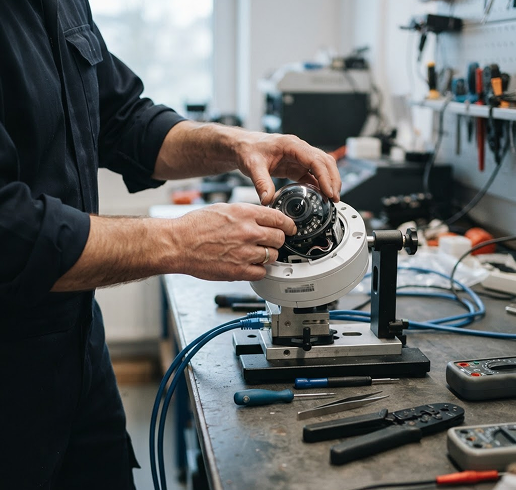

Cuida tu sistema
La instalación es
solo el comienzo.
Proponemos mantenimiento y soporte para revisar el estado del sistema y atender ajustes cuando tus necesidades cambien.
Mantenimiento preventivoRevisión de imagen, conexiones, limpieza y estado de la grabación.
Diagnóstico y ajustesEvaluación de fallas, reconfiguración y orientación de uso.
Ampliaciones y actualizaciónRevisión de compatibilidad al incorporar equipos o nuevos puntos.
Alcance, periodicidad y condiciones de atención por definir en la propuesta. No se presupone un servicio de monitoreo.